Week 16
Welcome to the final week (before the final presentation), this week I will be working on Tableau.
I have connected my "Data Analyst's Computer" to the server's MySQL database via Putty's SSH Tunnel.
Port 3307 is mapped to the 3306 on the server. I used my knowledge used in Data Discovery and Visualisation (DDV) module,
connected it to the MySQL database remotely.
In the first Picture, I have created the data analyst MySQL user, and only granted SELECT permission to the user.
In the next picture I created a View based on SELECT from_unixtime(avg(unix_timestamp(`Record`.`TimeOut`))) AS `AVG Time IN` FROM `Record`;.
Next, I did a cross join between the 'dummy time values' and the View above, in order for the clock visual to work.
For the next picture, I did a Calculated Column, which finds the difference between records and the Shift Time In/Out by Hours.
Next are the few visuals that I have created, simple bar charts showing hour differences, and an hour average clock.
Lastly, the last 2 are dashboards that show the Interactiveness of the dashboard.
This will be my last entry into the blog. Thank you very much for reading over the weeks.
 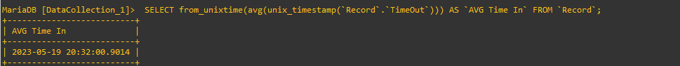
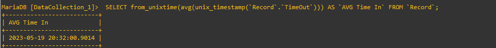

 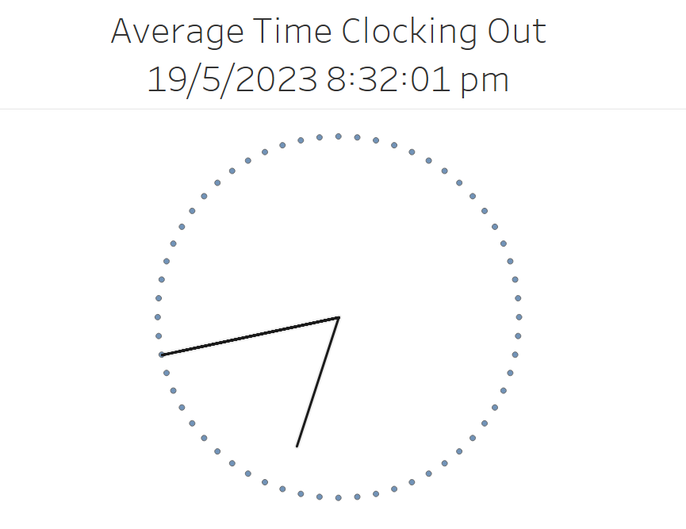
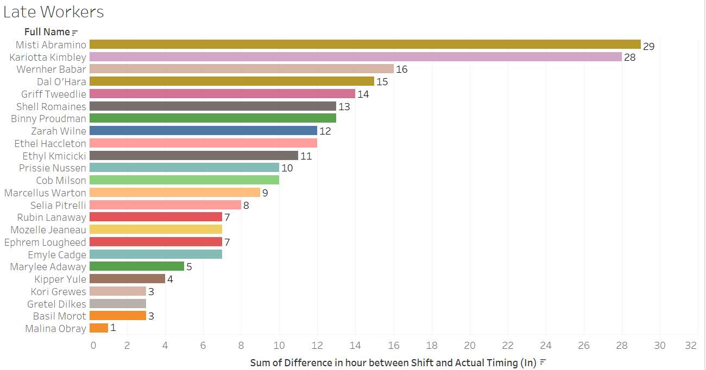
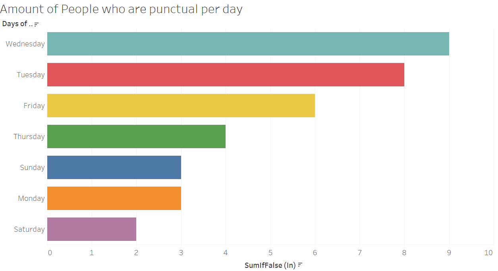
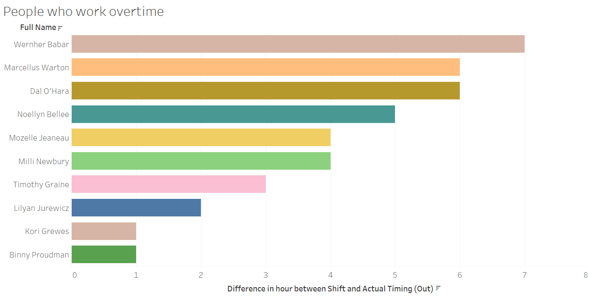
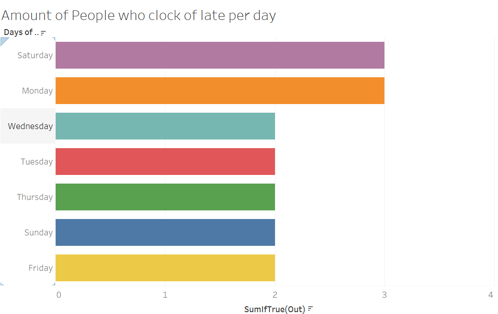
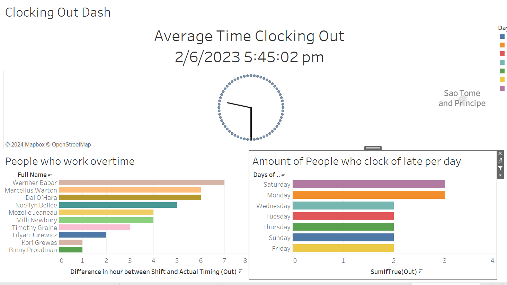
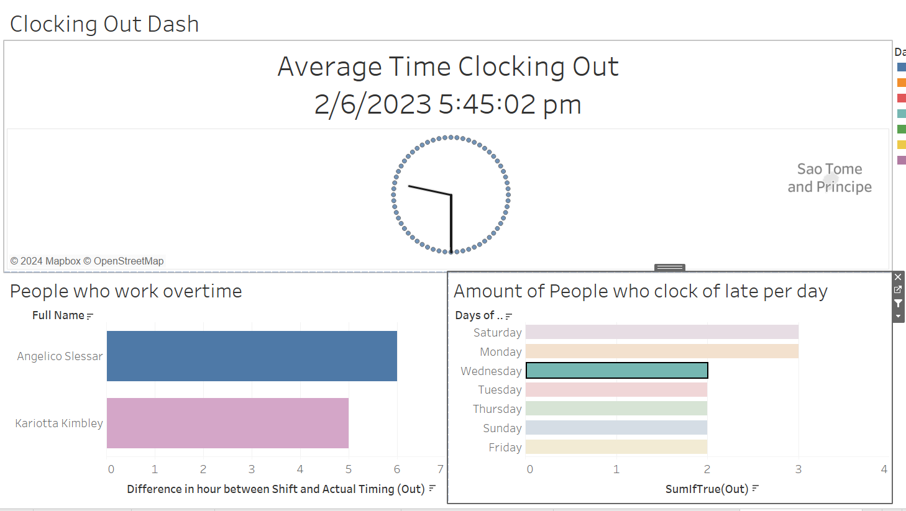
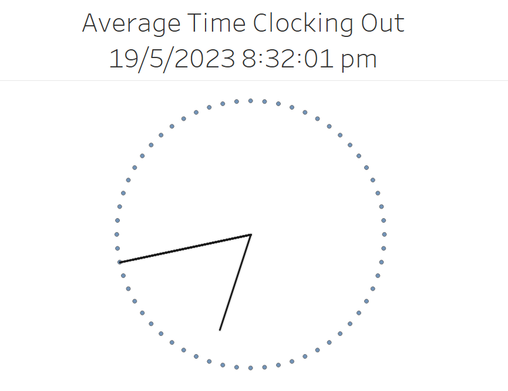
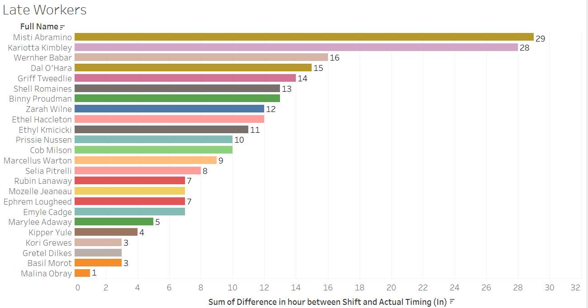
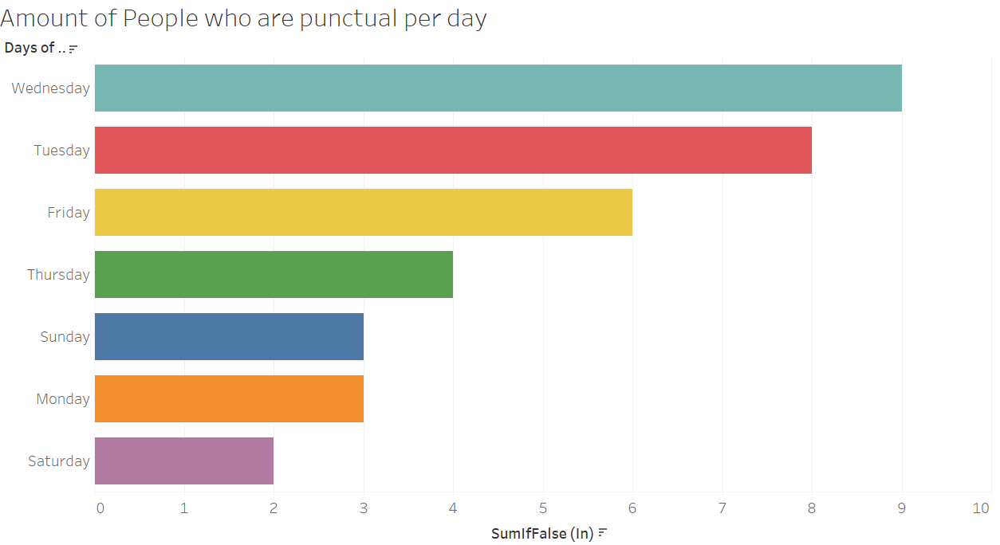
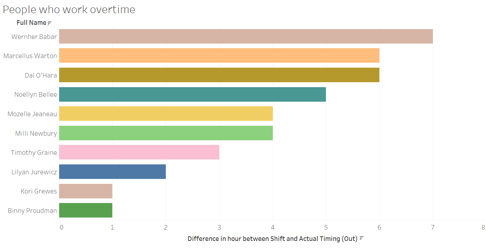
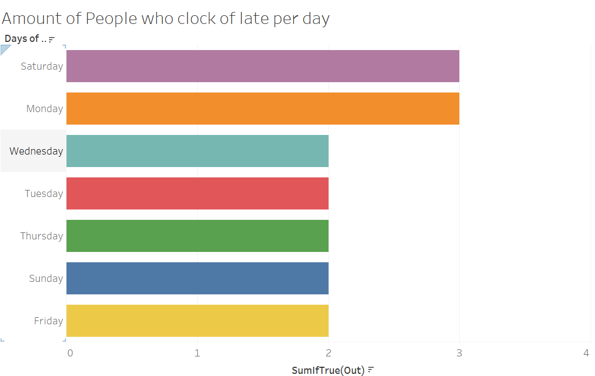
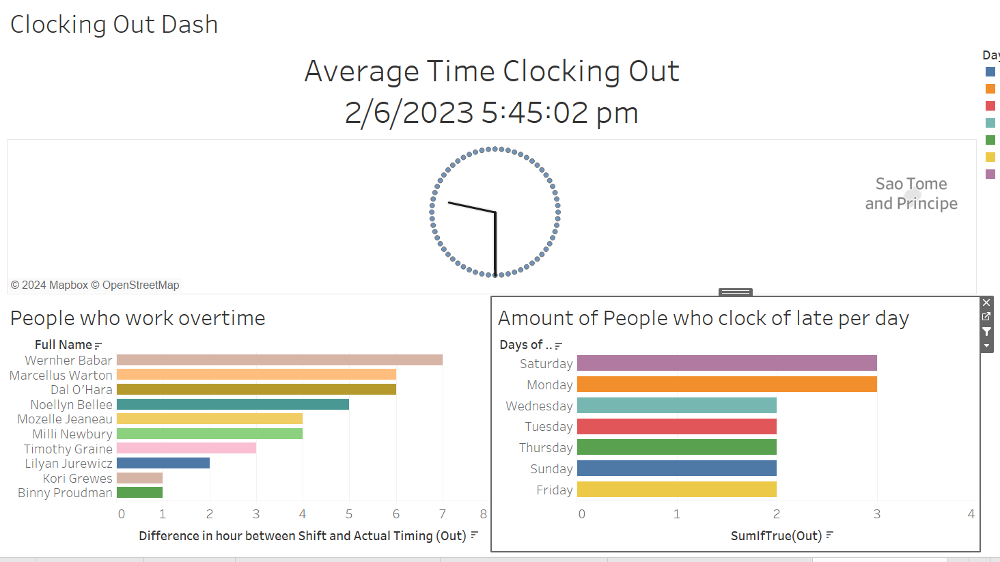
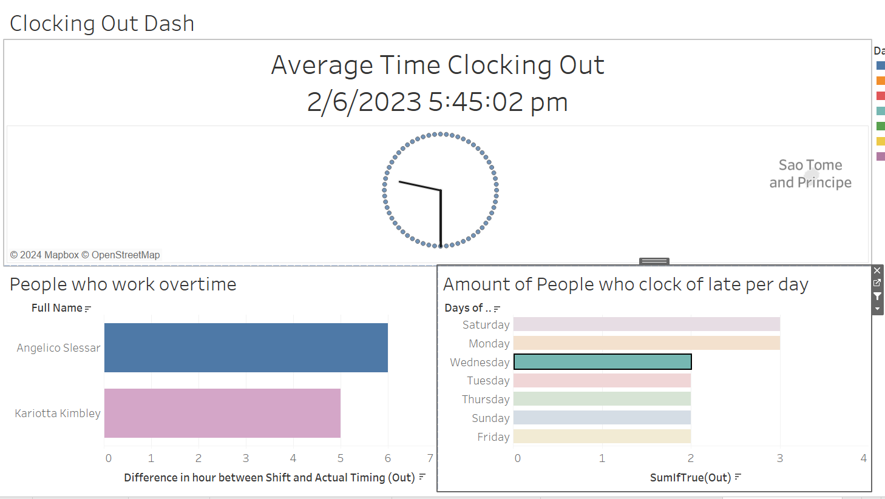